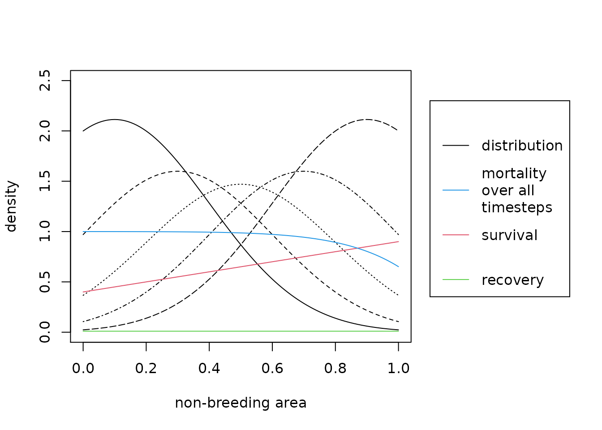
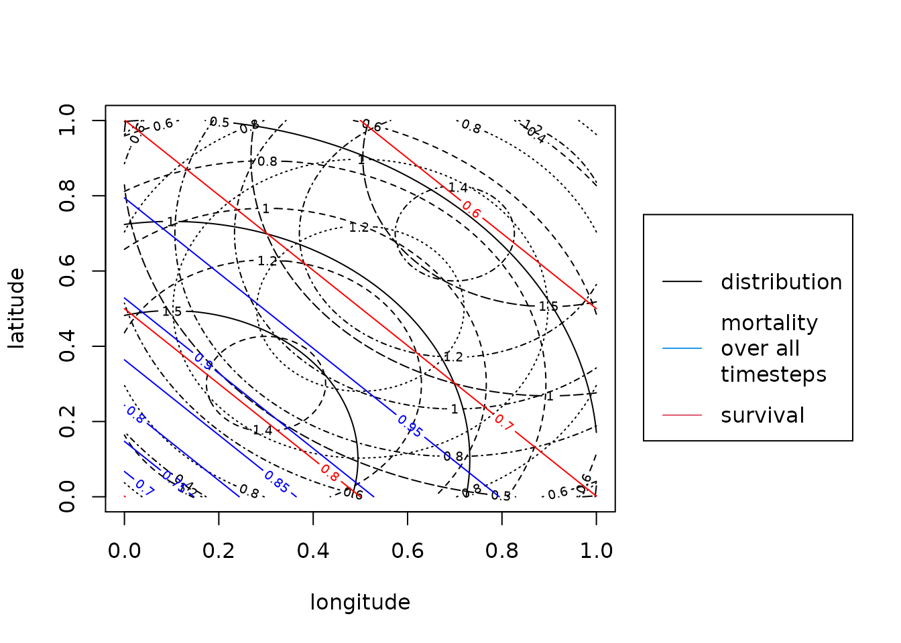

vignettes/SimulatingDataWithCONSURE.Rmd
SimulatingDataWithCONSURE.RmdIf you do not want to simulate data, but estimate parameters for your data, you can skip this vignette and rather read the vignette on how to estimate parameters or how to work with real-world data. Nevertheless, this vignette may help you to understand the background of how this package works.
To simulate data in one-dimensional space, we specify the number of breeding areas and the spatial resolution.
B <- 5 # number of breeding areas
res <- 100 # spatial resolution (number of grid points along the x-axis)Then, we specify an object of the class markRecaptureObject.
mro <- markRecaptureObject(xrange = c(0,1),
survival = function(w){0.5*w+.4},
recovery = function(w){0.01},
migratoryConnectivity = function(b,w,B=B){
truncnorm::dtruncnorm(w,0,1,
mean = seq(0.1,0.9,length.out = B)[b],
sd = 0.3)},
markedInds = rep(100000,B),
observationTime = 10)The true parameters of the simulated data looks like the following:

The black lines are the migratory connectivity distributions where different line types indicate different breeding areas. The red solid line is the survival function. The green constant line is the recovery probability. The blue solid line is the overall mortality during the observation times. This means 1- survival to the power of the observation time.
The structure of the initialized markRecaptureObject looks like the following:
str(mro, max.level = 1)
#> List of 9
#> $ winteringArea :List of 4
#> ..- attr(*, "class")= chr "winteringArea"
#> $ breedingAreas :List of 6
#> $ observationTime : num 10
#> $ numberOfBreedingAreas: int 5
#> $ spatialDim : num 1
#> $ spatialResolution : NULL
#> $ robust : logi TRUE
#> $ kde : list()
#> $ estimates : list()
#> - attr(*, "class")= chr "markRecaptureObject"The markRecaptureObject consists of an object of the class winteringAreaObject, an object of the class breedingAreaObject and information on the observation time, the number of breeding areas, the spatial dimension of the wintering area and the spatial resolution. The spatial dimension must not be predefined but will be extracted automatically. The spatial resolution is only needed for estimates and plots of these and will be defined later. Besides these, the markRecaptureObject contains predefined list entries for the kernel density estimate and the estimates of the model parameters.
The winteringAreaObject in detail looks like the following:
str(mro$winteringArea)
#> List of 4
#> $ window :List of 4
#> ..$ type : chr "rectangle"
#> ..$ xrange: num [1:2] 0 1
#> ..$ yrange: num [1:2] 0 0
#> ..$ units :List of 3
#> .. ..$ singular : chr "unit"
#> .. ..$ plural : chr "units"
#> .. ..$ multiplier: num 1
#> .. ..- attr(*, "class")= chr "unitname"
#> ..- attr(*, "class")= chr "owin"
#> $ survival :function (w)
#> ..- attr(*, "srcref")= 'srcref' int [1:8] 2 32 2 52 32 52 2 2
#> .. ..- attr(*, "srcfile")=Classes 'srcfilecopy', 'srcfile' <environment: 0x556b5b1ce328>
#> $ recovery :function (w)
#> ..- attr(*, "srcref")= 'srcref' int [1:8] 3 32 3 48 32 48 3 3
#> .. ..- attr(*, "srcfile")=Classes 'srcfilecopy', 'srcfile' <environment: 0x556b5b1ce328>
#> $ recoveryData: NULL
#> - attr(*, "class")= chr "winteringArea"In one-dimensional space defining an interval on a line via “xrange” is sufficient. In two-dimensional space the wintering area can be either defined as a rectangle using “xrange” and “yrange” or as a window. Therefore, the window is always a two-dimensional object. It is an owin-object from the spatstat.geom-package. Survival and recovery probability are independent of the breeding origin. They contain the true functions defined in the initializing step. The list entry recoveryData can be filled by real-world recovery data in the initializing step (see vignette for real-world data) or by simulated recovery data (see next section).
The list of one single breeding area is named by the name of the breeding area. By default the name is “b” and a consecutive number for all other breeding areas. It contains
Simulating data following the specification of the markRecaptureObject can be done using the function simContin. The simulated data corresponds to the dead recoveries at a spatial coordinate in the wintering area. Each dead recovery belongs to a breeding area and has a known age at death. The output is again a markRecaptureObject additionally storing the simulated data. It can be saved under the same name as the initializing markRecaptureObject.
mro <- simContin(mro)
#> Registered S3 method overwritten by 'cli':
#> method from
#> print.boxx spatstat.geomThe simulated data is stored both split by the wintering area and split by the breeding area and can be used according to which split is needed. The structure of the wintering area looks like this:
For every breeding area exists a matrix with the longitude (which represents the only spatial coordinate) and the time of each dead recovery.
head(mro$winteringArea$recoveryData$b1)
#> markArea longitude age
#> 1 b1 0.35661424 1
#> 2 b1 0.06869023 2
#> 3 b1 0.42779738 3
#> 4 b1 0.45303889 2
#> 5 b1 0.12429906 1
#> 6 b1 0.57693476 3Initializing a markRecaptureObject in two-dimensional space equals the initializing step in one-dimensional space. The only difference is that the wintering area is a rectangle (or a two-dimensional window) and a point w is now a two-dimensional vector with x- and y-coordinate. Therefore, we also must specify yrange for the rectangle and the the survival and migratory connectivity function must be two-dimensional. In the example below we choose survival probability as a plane linearly decreasing from the origin to the point (1,1). For the migratory connectivity function we choose the probability density function of a truncated bivariate normal distribution with different means for the different breeding areas. This function integrates to 1 over the whole non-breeding area by definition. The recovery probability remains a constant over the whole non-breeding space.
mro2 <- markRecaptureObject(xrange = c(0,1),
yrange = c(0,1),
survival = function(w){-sum(0.2*w)+0.9},
recovery = function(w){0.01},
markedInds = rep(100000,B) ,
migratoryConnectivity = function(b,w,lb=0,ub=1,B=B){
tmvtnorm::dtmvnorm(w, mean = rep(seq(0.1,0.9,length.out = B)[b],2),
sigma = diag(0.3,2), lower = rep(lb,2),
upper = rep(ub,2))
},
observationTime = 10)The true values look like the following:
plotMsr(mro2)
The black contours are the migratory connectivity distributions where different line types indicate different breeding areas. The red solid contours is the survival function. The blue solid contours is the overall mortality during the observation times. This means 1- survival to the power of the observation time. The recovery probability is not shown here as it is just a constant plane at 0.01.
The structure of the markRecaptureObject remains exactly the same as in one-dimensional non-breeding space
Simulating data remains the same as in one-dimensional space:
mro2 <- simContin(mro2)In contrast to data in one-dimensional space the simulated dead recoveries in two-dimensional space are stored in a matrix with three columns. One for the latitude, one for the longitude and one for the time of each dead recovery:
head(mro2$winteringArea$recoveryData$b1)
#> markArea longitude latitude age
#> 1 b1 0.4861081 0.2076185 1
#> 2 b1 0.5398212 0.9130435 1
#> 3 b1 0.7537778 0.5984288 1
#> 4 b1 0.5335912 0.2022777 1
#> 5 b1 0.1777884 0.8185445 1
#> 6 b1 0.5482583 0.4057414 1